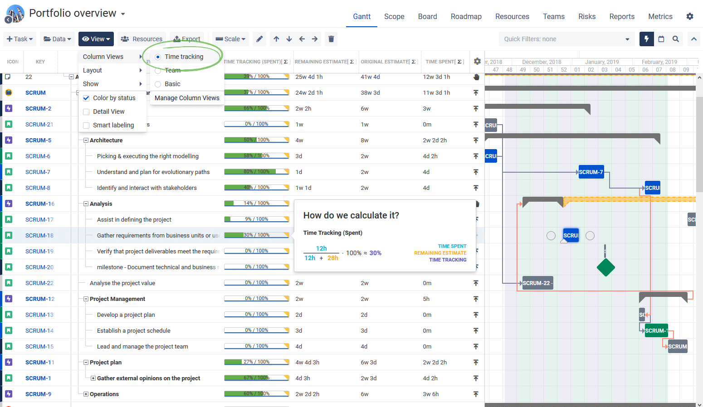
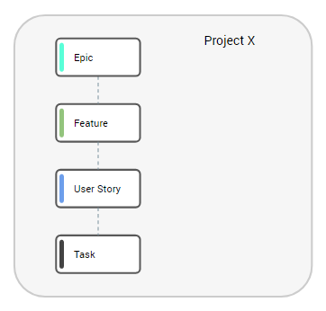

Blog information
- Category: Requirement Engineering
- Post date: 01 March, 2020
- Also seen in URL: www.example.com
How to do Startup-like Requirement Analysis in Big IT companies - Part 1
In the last couple of years a lot of different software requirement analysis and prioritization methodologies have raised from startup oriented app development, all with robust success in regard to their results.
But then, what happens when we try to apply such techniques in big corporate IT companies that want to become more agile, despite all standard processes and bureaucracy needed to deploy software in these enterprises?
That's what I want to share on the collection of blogs I will share in the coming weeks.
In my experience as Product Owner, working in an Agile Development team in a big IT company (SAP), since the beginning of the famous 2020 year we have tried to avoid the usual "Requirement Backlog List from nowhere" that came to us to work just as programmers of those requests.
The main problem with that approach is that the development teams do not get aligned with the motivations behind those requirements and feel far away from customers that are presumably demanding those needs. And from a Product Owner point of view, that old model seems more like a proxy work - requirement translation to dev teams - than a customer's demand exploratory journey.
When you are in a startup or small IT company, it is by far easier to get in touch with customer, get to know their pains, and right away apply techniques like User Story Mapping, Impact Mapping, Product Lifecycle Interviews and other cool stuff to determine and evaluate software requirements.
However, our environment was quite different. We were:
As you can see, not only I was trying to apply new methodologies vastly used in startups in a big enterprise, but we are also facing changes in our development model and resource structure. But in the end, all this only make the challenge more interesting :)
In order to make sure we could use those methodologies to derive requirements in a way we have a "shared understanding" of them - the ultimately reason to use the techniques - we first had to start by adjusting the way we were conceptualizing terms that were already part of our daily job, but not exactly in the right form.
So, although we were used to write User Stories based on "pre-defined" requirements, their content was not so clear - we were not creating the shared understanding among management, product owners and development team. This said, I proposed a new format to the way we were structuring our backlogs, from higher level requirements dow to team's user stories. The source for this structure is the very good article posted here: (find it)
With this simple change, we made it clear what we would pack as complete 'Features' to be deployed (and that represent an useful piece of software to users), and what would be the 'stories' development teams would have to create. Deriving stories from a feature created the feeling that the teams needed to understand the correlation among them, instead of just developing software as if they were not integrated at all. Also, higher management was not focused in too many details, since their visibility level was directed to features (value to customers), making it easier to quickly define what our APP does and what it does NOT do.
This initial change set the base for other enhancements, since by only separating "Features / User Stories" does not create any shared understanding per se. So that's where my first introduction of a "startup" requirement analysis tool was experimented: User Story Mapping - which will be part of the next part of this blog series.
In the Part 1 of this journey of implementing Agile requirement analysis in big tech companies my intention was to explain the environment and challenges we had to face to start trying to explore the benefits of a customer-focused, iterative user demand evaluation, with the concrete target of achieving a shared understanding among all stakeholders - that, in a big enterprise, are a lot of people!
Hope you have enjoyed this first chapter and, please, let you comments in the platform or just contact me for more details. See you all in the next post.